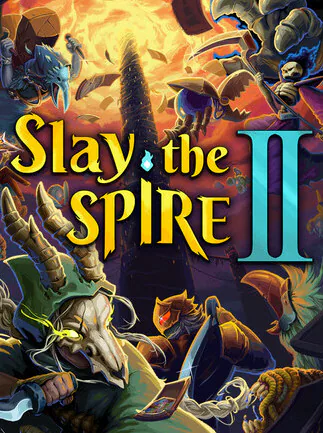
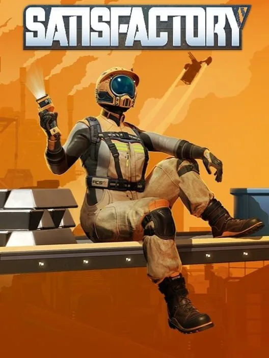
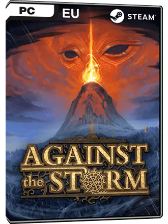
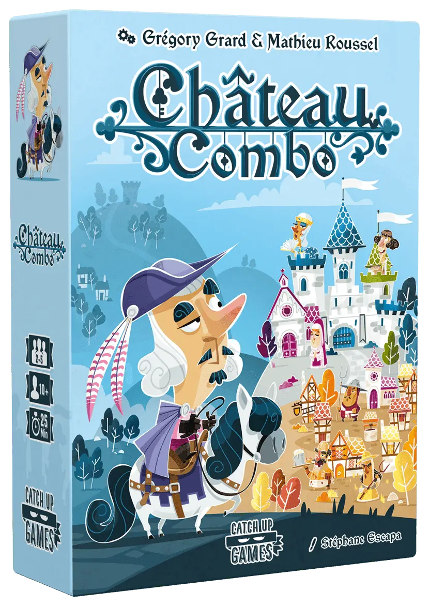
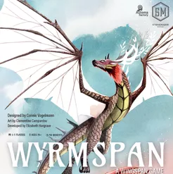
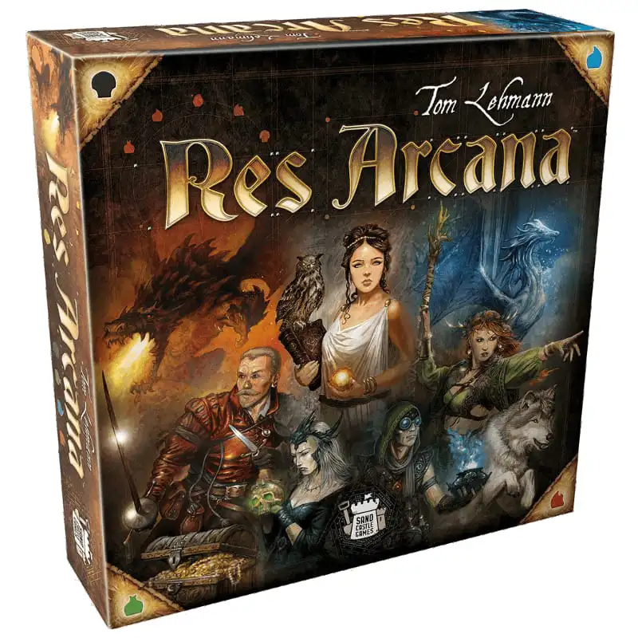
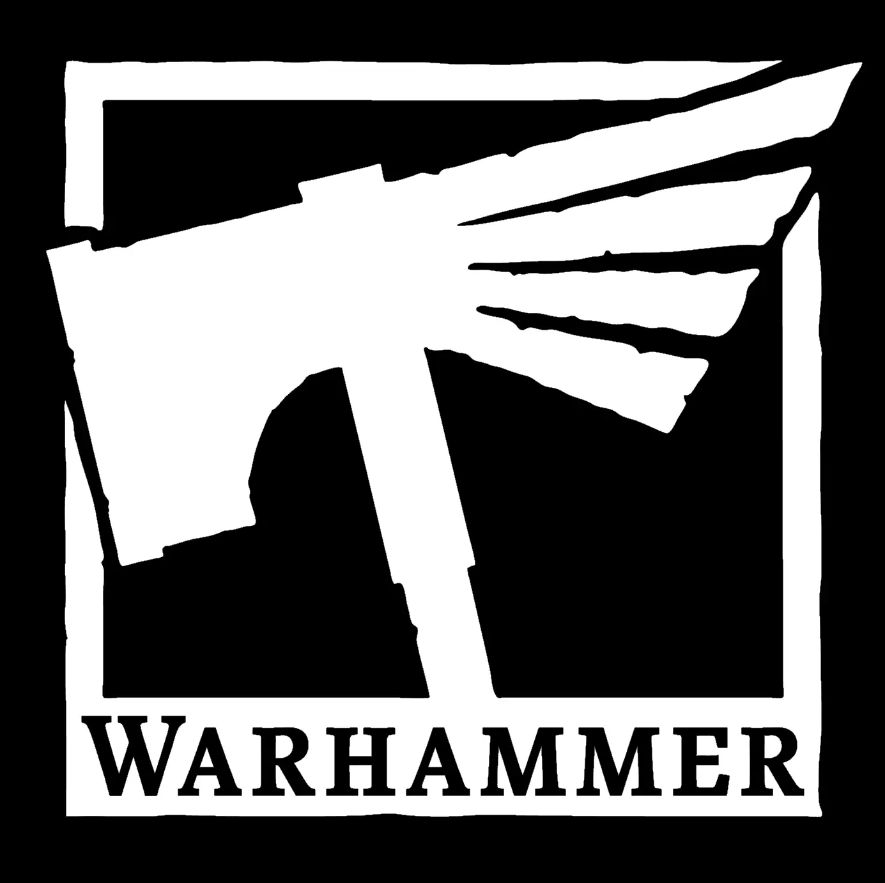

My hobbies
My Passion for Gaming & Strategy
Gaming has been a part of my life since childhood, sparking my creativity, imagination, and strategic thinking. Whether it's board games, video games, or classic strategy, play is my favorite way to relax, challenge my intellect, and connect with others.
Video Games: My Creative Playground
Video games have always been my playground for creativity. I love immersing myself in worlds where I can think, plan, and build from the ground up. I particularly enjoy strategy, roguelikes, and deckbuilding games, where every decision counts, and creating synergies is the key to success.
Beyond simply playing, I am deeply fascinated by game design. I love analyzing how different mechanics interact and how they serve the narrative purpose of the game. Building and optimizing intricate systems gives me a tremendous sense of accomplishment—it’s the perfect balance of creativity and analytical thinking.
Video Games of the Moment



Chess: Strategy, Analysis and Neuroscience
Chess is more than just a classic game to me; it is a fascinating window into human cognition. I am captivated by the mental processes involved on the board, from visual pattern recognition to managing cognitive load and anticipating an opponent's moves under time pressure.
I am a regular player since 2025 and I have participated to several tournaments, having a blast trying to improve and understand more and more stuff in the passionating world of chess.
Because it perfectly bridges my personal hobbies and my academic research in neuroergonomics, I have started writing a series of short articles exploring the cognitive and neurological mechanisms behind chess playing.
♟️ You can read my thoughts on the intersection of chess and the brain in my Blog section.
Board Games: Connecting while Playing
Board games are more than just entertainment—they are a fantastic medium to engage with friends and family in a fun, tactile, and competitive environment. I’m always exploring new mechanics, and I believe there is a perfect game for every group and every occasion.
I actively share this passion, having recently organized several board games week at the Aérothèque @ISAE-Supaero, and I am always looking forward to setting up similar community events.
Board Games of the Moment



Other Projects & Interests
In addition to gaming, I enjoy diving into hands-on personal projects that require patience and precision.
Open-Source Ecosystems
As a strong advocate for open science and software, I actively use Linux (CachyOS) as my primary OS. Building and customizing my own development environment is an ongoing project that continuously improves my coding practices.

Miniature Painting (Warhammer 40k)
I'm currently assembling and painting an army of Leagues of Votann. It's a meticulous, artistic, and highly rewarding hobby that contrasts perfectly with screen-heavy research work.